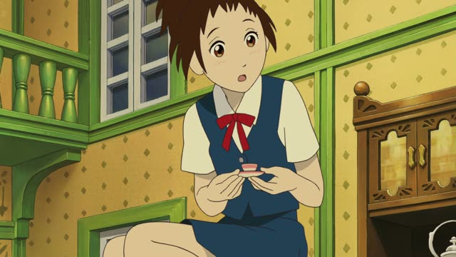

う-Verb (Dictionary)
| Polite | ～ます u sound → i, add ます |
|---|---|
| Casual | ～う dictionary form |
Same meaning. Only the politeness changes.
Japanese has three types of verbs. This page is about the first one, the う-verbs.
| Verb type | Dictionary | Polite |
|---|---|---|
| 1う-verbmost verbs · this page | 書くalso 飲む, 話す, 買う... | 書きますu sound → i sound, add ます |
| 2る-verb | 食べるalso 見る, 起きる, 寝る... | 食べますdrop る, add ます |
| 3Irregularjust these two verbs | する 来る | します 来ますjust learn these |
How to tell which type a verb is
- Step 1
Is it する or 来る?
Yes: Irregular. No: go to step 2.
- Step 2
Does it end in る?
No: う-verb (書く, 飲む). Yes: go to step 3.
- Step 3
Is the sound just before る an i or an e?
No: う-verb (分かる wa-ka-ru, 作る tsu-ku-ru).
Yes: usually a る-verb (見る mi-ru, 食べる ta-be-ru).
A few break step 3. These look like る-verbs but are う-verbs: 帰る, 入る, 走る, 知る.

The Cat Returns
あの…私、帰ります。
"Um... I'm going home."
帰る is the dictionary form: the verb exactly as the dictionary lists it, ending in an u sound. Polite: the last sound moves from u to i, then ます goes on: 帰る → 帰ります. That change is what makes it a う-verb.
On this card, she's leaving: 帰ります = "I'm going home". 帰る looks like a る-verb, but it's a う-verb, so it takes り before ます.

Shirokuma Cafe · Episode 13
願いごとが叶うよ。
"Your wish will come true."
The dictionary form alone is casual, and it can mean "it will happen". On this card, he's explaining what happens if you hang a wish on the bamboo: 叶う, "it will come true".
Every ending
The last sound moves from the u row to the i row, then ます.
Only this row is confusing. Every ending above is always a う-verb. A verb ending in る can be a う-verb or a る-verb.
Careful with る. Look at the sound right before it. With an a, u or o sound, it's always a う-verb: 作る → 作ります. With an i or e sound, it's usually a る-verb, where る just drops: 食べる → 食べます. A few common verbs break that and are う-verbs anyway: 帰る → 帰ります.
In Japanese, う-verbs are called 五段 (godan), "five steps".
A verb alone can be a sentence
Japanese doesn't need a subject, so one verb can be the whole sentence. The context tells you who's doing it.

1 Litre of Tears · Episode 3
違う。
"[That's] not it."
Casual
Samurai Champloo · Episode 13
断る
"[I] refuse."
Casual
Good Morning Call · Episode 12
頼む
"[I'm] begging [you]."
CasualQuick Examples
Your friend asks if you're getting the new game.
うん、買う！
"Yeah, I'll buy it!"
To a coworker: 買います.
CasualThe barista asks if your coffee is to go.
ここで飲みます。
"I'll drink it here."
飲む → 飲みます: む becomes み.
PoliteYour friend texts: "running 10 minutes late, sorry!"
じゃあ、カフェで待つ。
"Okay, I'll wait at the café."
Polite: 待ちます. つ becomes ち.
CasualA client asks when you'll send the finished drawings.
明日送ります。
"I'll send them tomorrow."
送る → 送ります: る becomes り.
PoliteExamples from Media
Midnight Diner: Tokyo Stories · Season 2, Episode 7
はい、飲んだらすぐ帰りますよ。
"Yes, I'll head home right after a drink."
帰る → 帰ります.

YouTube · Japanese Listening Practice With A Story #10
じゃあ、２０分ぐらい煮込みます。
"Okay, now we simmer it for about 20 minutes."
煮込む → 煮込みます. Recipes and how-tos love the ます form.

YouTube · My Five Favorite Things
僕は毎朝、この髭剃りを使います。
"I use this razor every morning."
使う → 使います: う becomes い.

Last Samurai Standing · Episode 1
十也、手拭いを頼む。
"Toya, get me a hand towel."
頼む is "to ask for". The dictionary form makes it a short, casual request. Polite: 頼みます.

PiroPito · First Playthrough of Minecraft #06
家の中に逃げ込む。
"[I'll] run into the house."
Talking to himself while playing, so casual. 逃げ込む is "to run in to hide". Polite: 逃げ込みます.

Pokémon: Indigo League · Episode 1
木の実などの硬い物やチーズを好む。
"Likes hard things like nuts and cheese."
The Pokédex talks like a written description, and those use the dictionary form. 好む → 好みます.

Shirokuma Cafe · Episode 5
今日はもう帰るね。
"I'm heading home now for today."
Polite would be 帰ります.
Last Samurai Standing · Episode 5
必ず帰る。
"I'll come back, I promise."
Further Reading
A Dictionary of Basic Japanese Grammar
Appendix 1, Basic Conjugations (Group 1 verbs) · pp. 576–577
Tae Kim's Guide to Japanese Grammar
Verb Basics · Classifying verbs
Polite Form and Verb Stems · Using 「～ます」 to make verbs polite